OSP AUTOCAREBiblioteca PNG / PNG Library
48 imágenes locales de referencia del alternador. Abra una imagen para verla completa o descárguela como PNG.
Local alternator reference images. Open an image to view it or download its PNG.
Estas imágenes no verifican compatibilidad exacta por VIN. / These images do not verify exact VIN fitment.
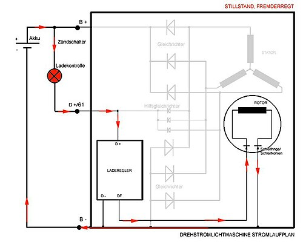
DocWoelle · Copyrighted free usePNG ↓
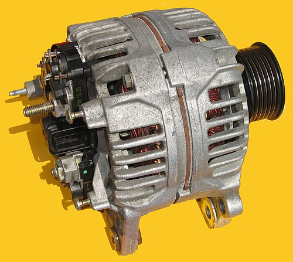
Hans Haase · CC BY-SA 4.0PNG ↓
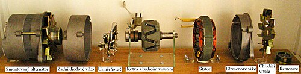
I would appreciate being notified if you use my work outside Wikimedia.
Do not copy this image illegally by ignoring the terms of the license below, as it is not in the public domain. If you would like special permission to use, license, or purchase the image please contact me to negotiate terms.
More of my work can be found in my personal gallery. · CC BY 3.0PNG ↓
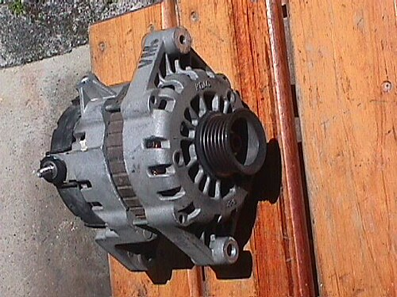
EL Guarito · CC BY-SA 3.0PNG ↓
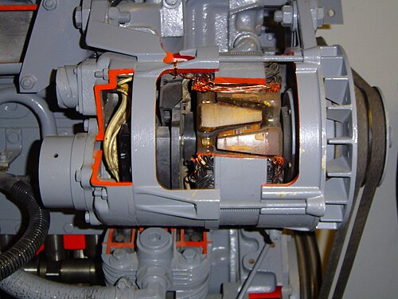
The original uploader was Piero at Dutch Wikipedia. · CC BY-SA 3.0PNG ↓
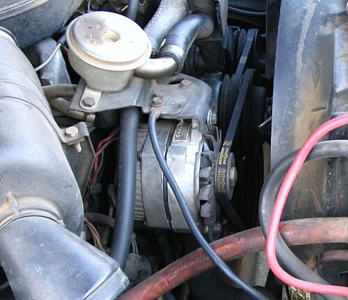
· CC BY 3.0PNG ↓
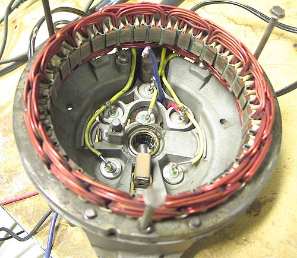
The original uploader was Glogger at English Wikipedia. · GPLPNG ↓
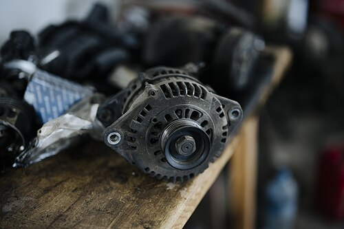
Shixart1985 · CC BY 2.0PNG ↓
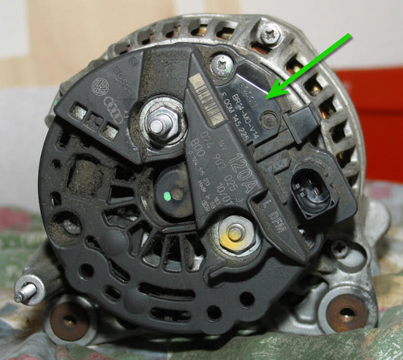
Florian-schäffer · GFDLPNG ↓
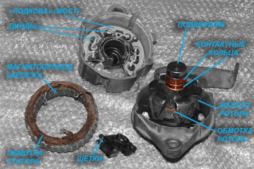
Vivan755 · CC BY-SA 4.0PNG ↓
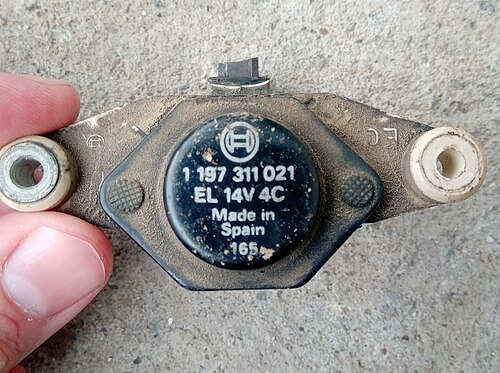
Milicevic01 · CC BY-SA 4.0PNG ↓
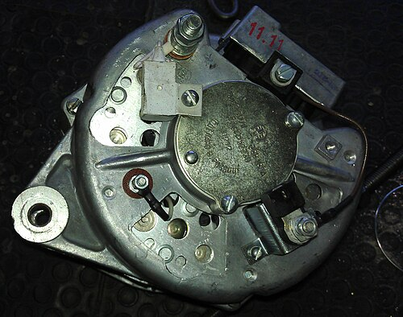
Zinnsoldat · CC BY-SA 3.0PNG ↓
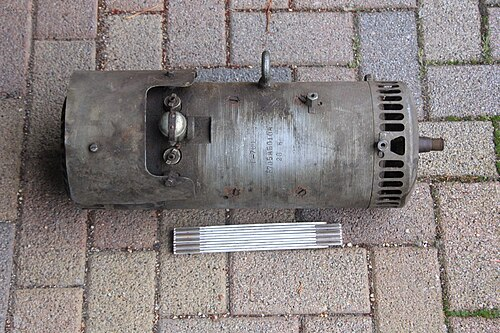
Druschba 4 · CC BY-SA 4.0PNG ↓
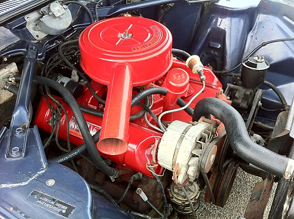
CZmarlin — Christopher Ziemnowicz, releases all rights but a photo credit would be appreciated if this image is used anywhere other than Wikipedia. Please leave a note at Wikipedia here. Thank you! · CC0PNG ↓
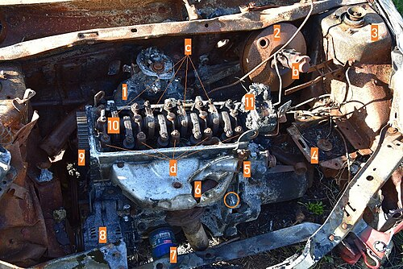
Dacia 1410 Sport · CC BY-SA 4.0PNG ↓
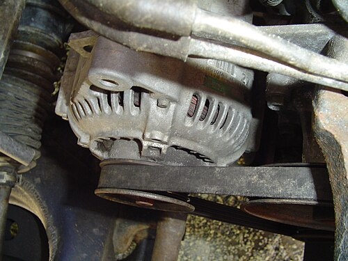
· CC BY-SA 3.0PNG ↓
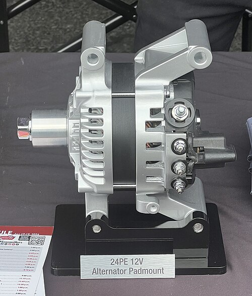
TaurusEmerald · CC BY-SA 4.0PNG ↓
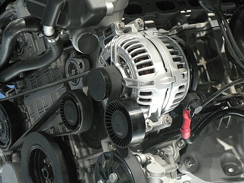
Ton1~commonswiki · CC BY-SA 3.0PNG ↓
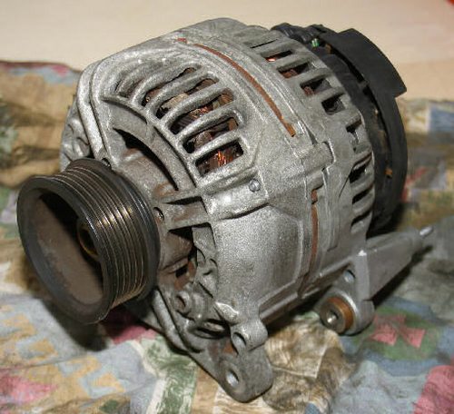
Florian Schäffer · CC BY-SA 3.0PNG ↓
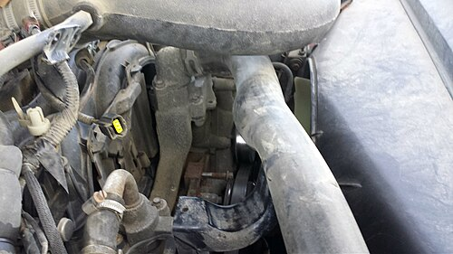
dave_7 from Lethbridge, Canada · CC BY 2.0PNG ↓
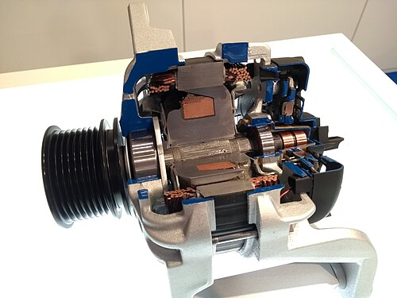
MAbW · CC BY-SA 4.0PNG ↓
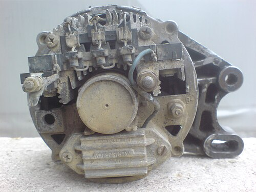
Milicevic01 · CC BY-SA 4.0PNG ↓
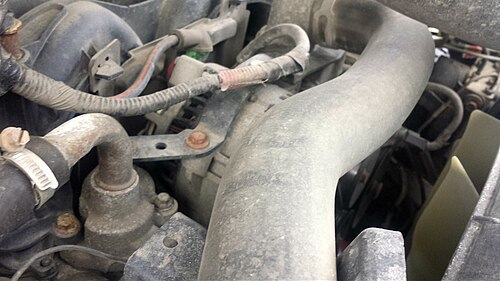
dave_7 from Lethbridge, Canada · CC BY 2.0PNG ↓
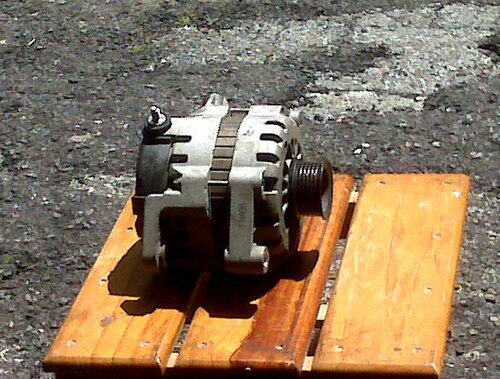
EL Guarito · CC BY-SA 3.0PNG ↓
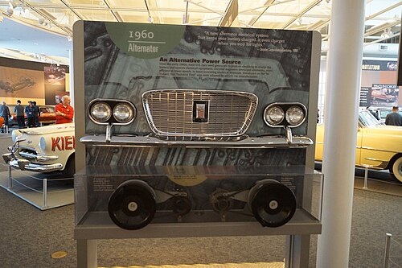
Greg Gjerdingen from Willmar, USA · CC BY 2.0PNG ↓
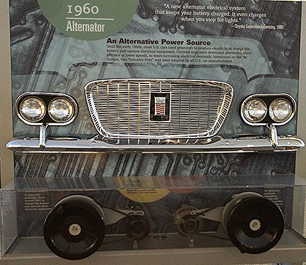
Greg Gjerdingen from Willmar, USA · CC BY 2.0PNG ↓
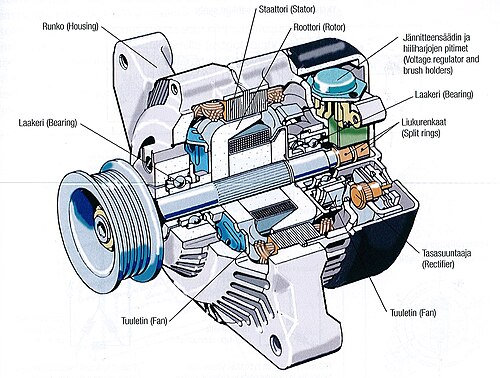
Pentti Immonen · Public domainPNG ↓
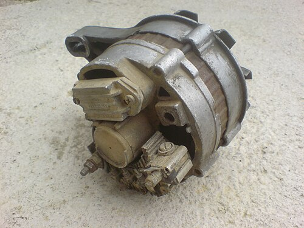
Milicevic01 · CC BY-SA 4.0PNG ↓
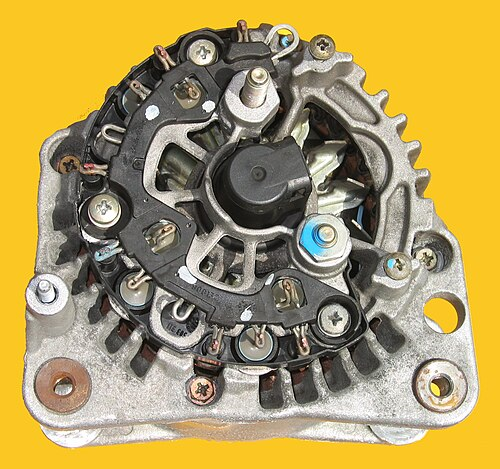
Hans Haase · CC BY-SA 4.0PNG ↓
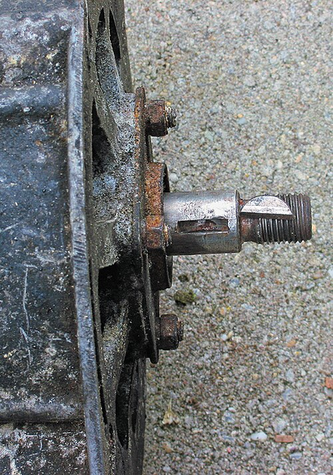
Rasbak · CC BY-SA 3.0PNG ↓
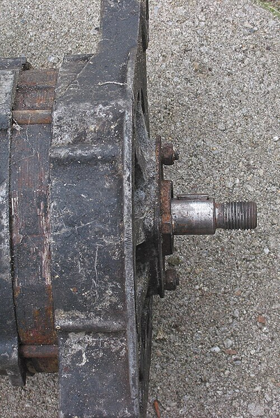
Rasbak · CC BY-SA 3.0PNG ↓
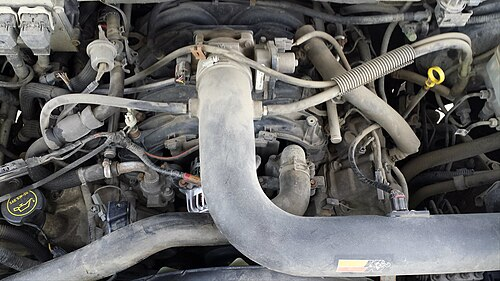
dave_7 from Lethbridge, Canada · CC BY 2.0PNG ↓
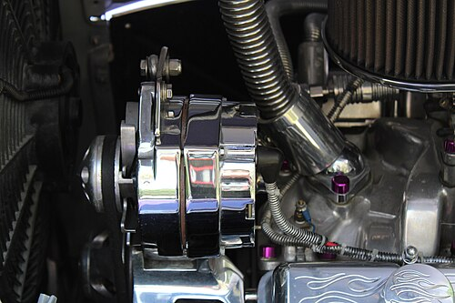
Thorsten Lindner · CC BY-SA 4.0PNG ↓
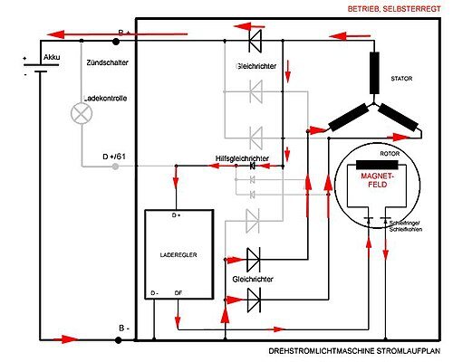
DocWoelle · Copyrighted free usePNG ↓
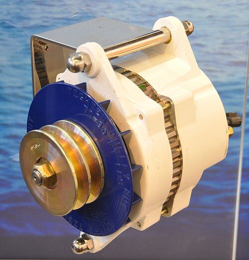
S.J. de Waard · CC BY-SA 3.0PNG ↓
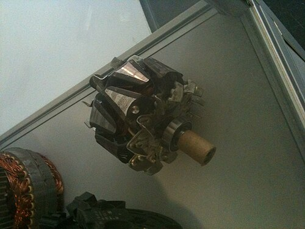
Dermartinrockt · CC0PNG ↓
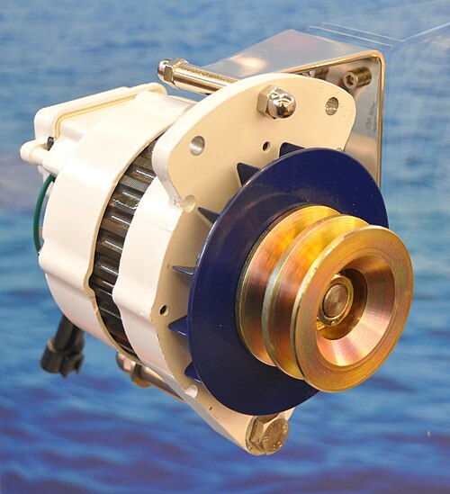
S.J. de Waard · CC BY-SA 3.0PNG ↓
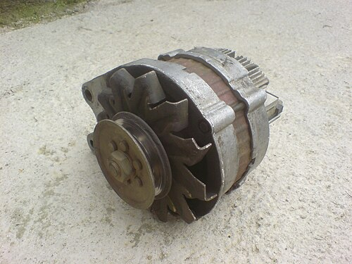
Milicevic01 · CC BY-SA 4.0PNG ↓
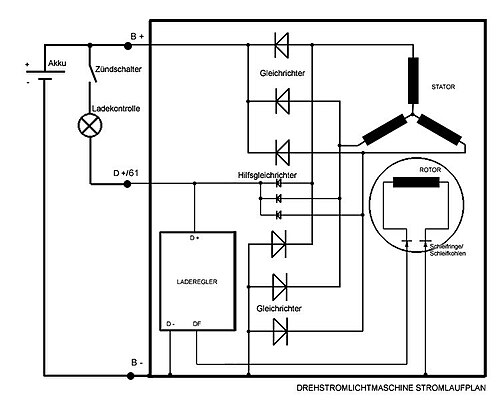
selbst gezeichnet · Copyrighted free usePNG ↓
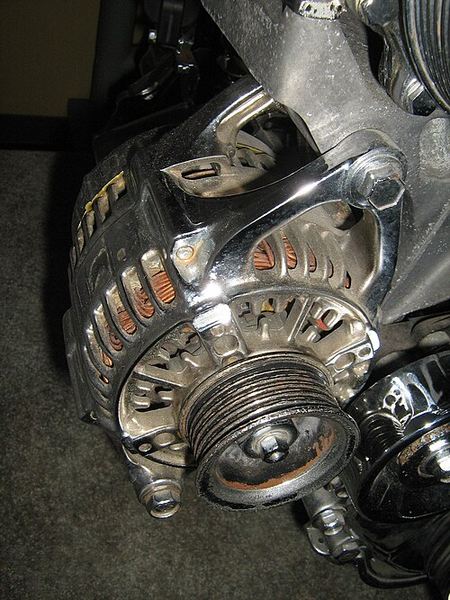
CZmarlin — Christopher Ziemnowicz, releases all rights but a photo credit would be appreciated if this image is used anywhere other than Wikipedia. Please leave a note at Wikipedia here. Thank you! · Public domainPNG ↓
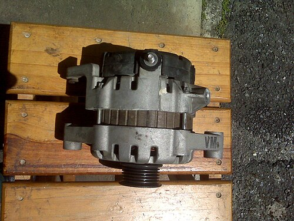
EL Guarito · CC BY-SA 3.0PNG ↓
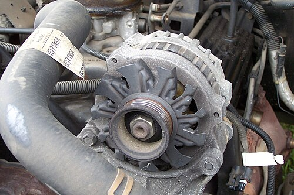
Angelsharum · CC BY-SA 3.0PNG ↓
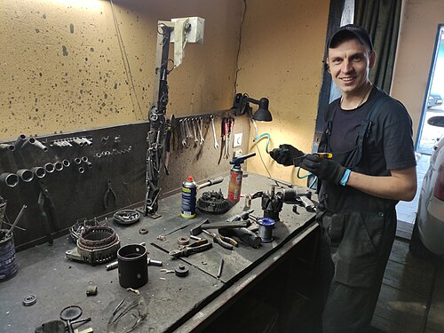
Perohanych · CC BY-SA 4.0PNG ↓
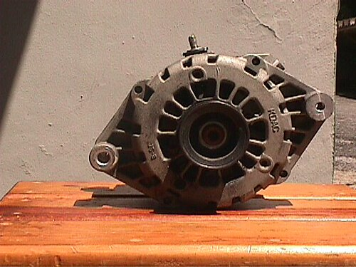
EL Guarito · CC BY-SA 3.0PNG ↓
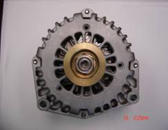
HOAlternator1 · CC BY-SA 3.0PNG ↓
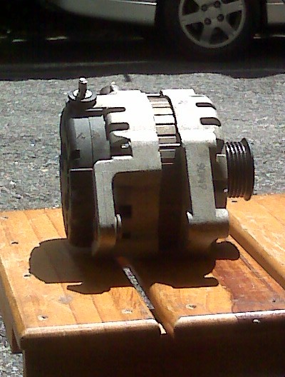
EL Guarito · CC BY-SA 3.0PNG ↓
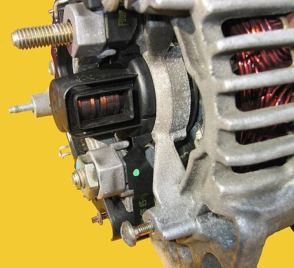
Hans Haase · CC BY-SA 4.0PNG ↓
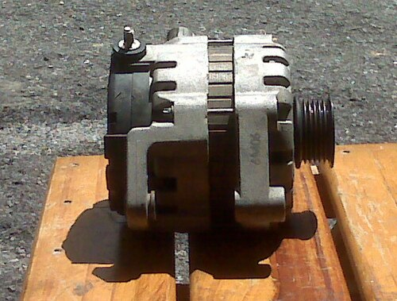
EL Guarito · CC BY-SA 3.0PNG ↓